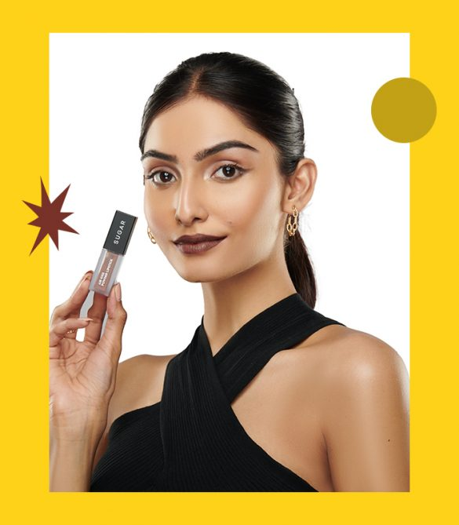
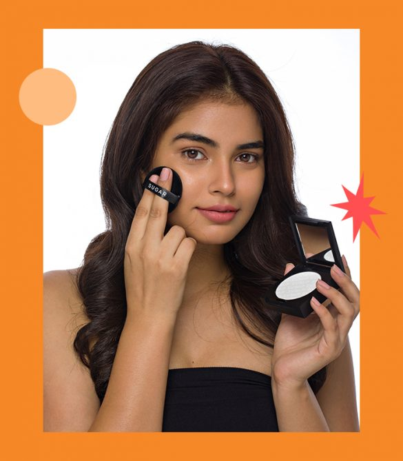
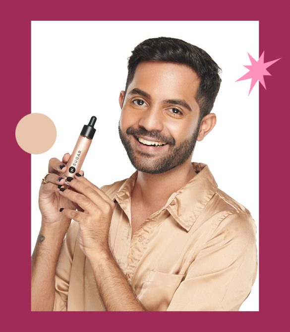
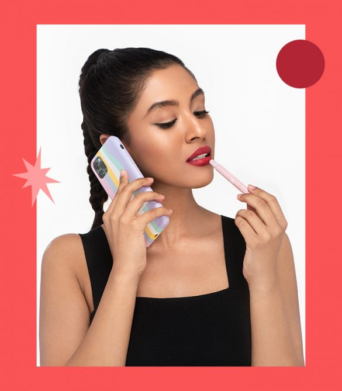
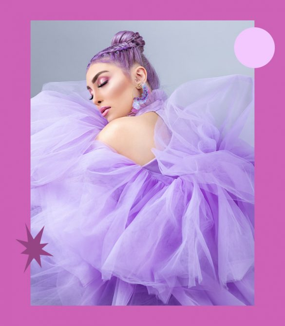
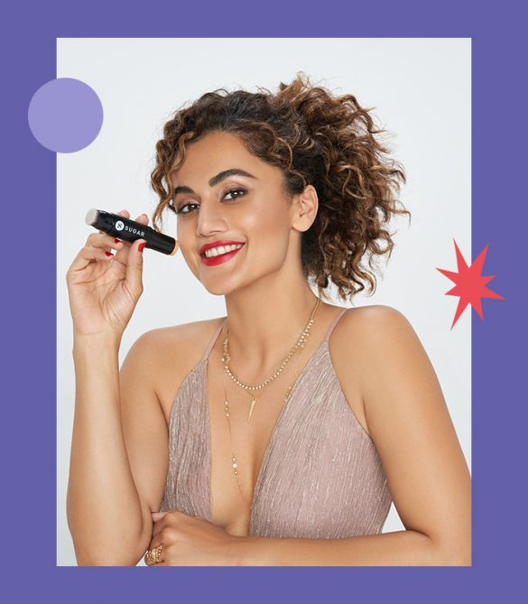
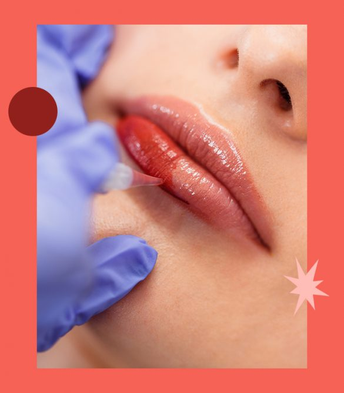
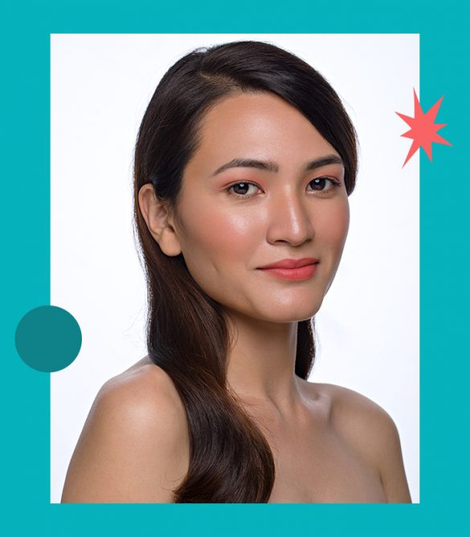

HD Makeup |
Matte Makeup |
Dewy Makeup |
Airbrush Makeup |
|
|  |  |  |  | |
|
HD makeup is like wearing an Instagram filter in real life, where you have no dark circles, no large pores,no uneven tone, and only flawless skin. Although this makeup is full-coverage and bounces light, it is feather-light and does not look overdone. Most importantly, you do not see the makeup settling into creases and fine lines. If you have oily skin, you can also opt for HD matte makeup. |
A messiah for those with oily skin, or for people who live in humid weather, let us introduce matte makeup to you. A type of makeup that gives the runway models their natural-looking, porcelain finish, you can bet that matte makeup is a makeup artists’ best-kept secret. It is perfect for those who are desperately looking for a shine-free makeup look. So, if you’re looking out for makeup that stays put, does not budge, and gives a seamless finish, then you have got to try matte makeup! |
Where there is matte on one end, there is dewy makeup on the other. If you love the forever glow on Alia Bhatt or Jennifer Lopez, then my friend, you’ll love the dewy makeup look. Destined to make you look youthful and fresh, this makeup has been a go-to for many celebs. It lies in the sweet spot between full-face makeup and a no-makeup makeup look. It is dreamy and appalling and can be created easily at home. |
Time for the typical makeup applicators – your fingers, beauty blenders, sponges, and brushes, to leave the stage and make way for makeup 2.0. Airbrushing is an all-new way to apply your makeup, and the results are totally out of the world. So many celebs as well as brides-to-be rely on airbrushing to get that flawless and fabulous finish. As the name suggests, this method employs a small pen-like applicator that airbrushes foundation as well as blushers gently across your face. It is lightweight, long-lasting, and offers a much smoother finish as compared to the other types of makeup. |
|
Editorial Makeup |
Celebrity Makeup |
Permanent Makeup |
Nude Makeup |
|
|  |  |  |  | |
|
From newspapers to magazines, to flyers, to hoardings, the makeup looks that you see in print and media is editorial makeup. A prime example would be the worldwide hit TV show, Euphoria. Here, the makeup is a major part of the story and the emotions of the characters. They run parallel to the concept and the storyline, conveying a deeper meaning. Editorial makeup is typically flawless, you’ll not see one strand of hair out of place. These makeup looks also take a lot of creative liberty, and are often OTT, certainly not something that you’ll wear to a brunch. |
Be it Deepika Padukone sporting her eye-conic thick black kohl look, to Katrina Kaif in her peachy makeup, celebs have always left us star-struck with their signature looks. Every celeb outfit needs a different makeup look, a fresh approach, and some magic! These makeup looks are bound to slay and make us want to cop them. Be it for movies or public appearances, celebs leave no stone unturned when it comes to playing with their makeup. Currently, Deepika Padukone’s no-makeup makeup-look, and Alia Bhatt’s striking red bindi makeup look is going viral, with beauty enthusiasts trying to decode and replicate them. |
Permanent makeup, like the name implies, gives you perfectly done eyes, lips, and a lot more, that stays on, really long. Chances are, you’ve heard of microblading, thanks to the booming interest in brows over the past few years. Although, that is the beginning. Today, you can get semi-permanent makeup tattoos. First up, is lip blushing, where you’ll get a subtle wash of sheer colour across the entire lip. It is subtle, maybe a shade or two darker than your natural lip colour. |
While a bold rep lip and a strong highlight remain cult favourites, you might not be a stranger to the nude makeup look. From IG models to celebs, the nude makeup or the no-makeup makeup look is all over the internet today wherein the focus is to have a look that is as close to your natural skin as possible. It’s your skin, only better. The idea is to use sheer cover products, and make the skin look like it is glowing from within. |